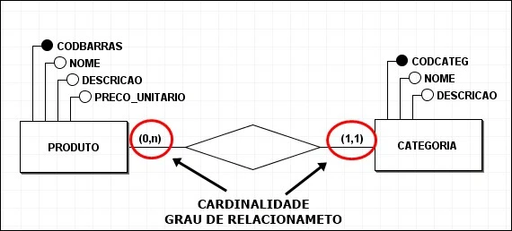

Vamos ilustrar um exemplo de cardinalidade entre duas entidades de um banco de dados: Produtos e Categorias.
A relação entre essas duas tabelas pode ser de 1:N (um para muitos), onde uma categoria pode ter vários produtos, mas cada produto pertence a apenas uma categoria.
No diagrama acima, podemos ver como a tabela "Categorias" se relaciona com a tabela "Produtos". Cada categoria pode ter diversos produtos, mas cada produto tem uma única categoria associada.